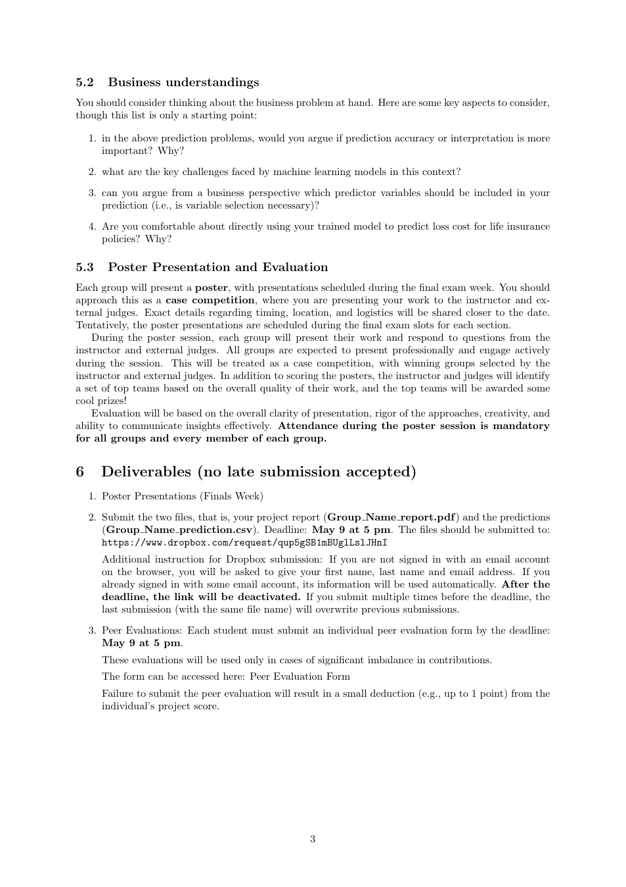
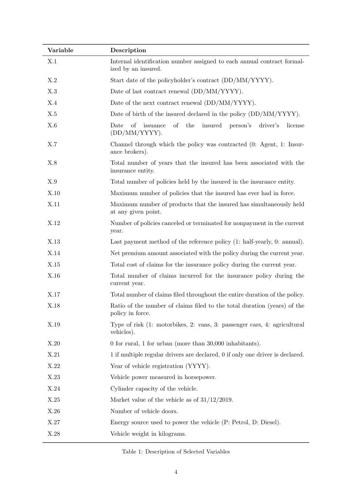

The answer
Separate the problem into claim likelihood and claim severity. The data were highly zero-inflated, so a single ordinary regression would blur together two different questions: whether a claim happens and how large it is if it happens.
Why this problem is difficult
Most policies had no claim, which creates a large mass at zero and a smaller set of positive losses. That makes the target structurally different from a standard continuous outcome.
Model evidence

Explainability
SHAP was used after model selection to show which features pushed claim probability up or down. That matters in insurance because a more accurate model is not automatically a more usable model if pricing decisions cannot be explained.

Business takeaway
My contribution & scope
The public case study summarizes the team's modeling work. In interviews, I would clearly separate my own contribution from shared team work and discuss only methods I can explain end-to-end.